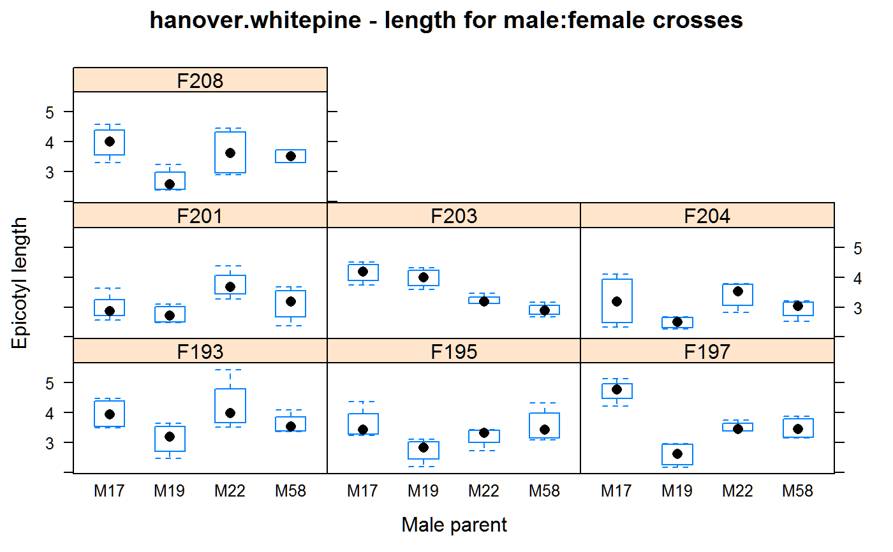

hanover.whitepine.RdMating crosses of white pine trees
data("hanover.whitepine")
A data frame with 112 observations on the following 4 variables.
repreplicate
femalefemale parent
malemale parent
lengthepicotyl length, cm
Four male (pollen parent) White Pine trees were mated to seven female trees and 2654 progeny were grown in four replications, one plot per mating in each replication. Parent trees were sourced from Idaho, USA. The data are plot means of epicotyl length.
Becker (1984) used these data to demonstrate the calculation of heritability.
Hanover, James W and Barnes, Burton V. (1962). Heritability of height growth in year-old western white pine. Proc Forest Genet Workshop. 22, 71--76.
Walter A. Becker (1984). Manual of Quantitative Genetics, 4th ed. Page 83.
None
library(agridat) data(hanover.whitepine) dat <- hanover.whitepine libs(lattice) # Relatively high male-female interaction in growth comared # to additive gene action. Response is more consistent within # male progeny than female progeny. # with(dat, interaction.plot(female, male, length)) # with(dat, interaction.plot(male, female, length)) bwplot(length ~ male|female, data=dat, main="hanover.whitepine - length for male:female crosses", xlab="Male parent", ylab="Epicotyl length")#> [1] 380.58#> female male length #> 1 F193 M17 15.87 #> 2 F195 M17 14.49 #> 3 F197 M17 18.89 #> 4 F201 M17 11.93 #> 5 F203 M17 16.61 #> 6 F204 M17 12.82 #> 7 F208 M17 15.91 #> 8 F193 M19 12.49 #> 9 F195 M19 10.95 #> 10 F197 M19 10.39 #> 11 F201 M19 11.02 #> 12 F203 M19 15.90 #> 13 F204 M19 9.94 #> 14 F208 M19 10.78 #> 15 F193 M22 16.94 #> 16 F195 M22 12.80 #> 17 F197 M22 14.06 #> 18 F201 M22 15.01 #> 19 F203 M22 12.92 #> 20 F204 M22 13.65 #> 21 F208 M22 14.58 #> 22 F193 M58 14.52 #> 23 F195 M58 14.28 #> 24 F197 M58 13.94 #> 25 F201 M58 12.41 #> 26 F203 M58 11.63 #> 27 F204 M58 11.78 #> 28 F208 M58 14.07# Sum of squares matches Becker p 85 m1 <- aov(length ~ rep + male + female + male:female, data=dat) anova(m1)#> Analysis of Variance Table #> #> Response: length #> Df Sum Sq Mean Sq F value Pr(>F) #> rep 3 1.8218 0.6073 3.0299 0.03406 * #> male 3 12.3538 4.1179 20.5460 5.393e-10 *** #> female 6 6.4977 1.0829 5.4032 9.740e-05 *** #> male:female 18 13.4609 0.7478 3.7312 2.266e-05 *** #> Residuals 81 16.2344 0.2004 #> --- #> Signif. codes: 0 '***' 0.001 '**' 0.01 '*' 0.05 '.' 0.1 ' ' 1# Variance components match Becker p. 85 libs(lme4) libs(lucid) m2 <- lmer(length ~ (1|rep) + (1|male) + (1|female) + (1|male:female), data=dat)#> Warning: Model failed to converge with max|grad| = 0.00281362 (tol = 0.002, component 1)#as.data.frame(lme4::VarCorr(m2)) vc(m2)#> grp var1 var2 vcov sdcor #> male:female (Intercept) <NA> 0.1368 0.3699 #> female (Intercept) <NA> 0.02102 0.145 #> male (Intercept) <NA> 0.1202 0.3468 #> rep (Intercept) <NA> 0.01451 0.1205 #> Residual <NA> <NA> 0.2004 0.4477## grp var1 var2 vcov sdcor ## male:female (Intercept) <NA> 0.1369 0.3699 ## female (Intercept) <NA> 0.02094 0.1447 ## male (Intercept) <NA> 0.1204 0.3469 ## rep (Intercept) <NA> 0.01453 0.1205 ## Residual <NA> <NA> 0.2004 0.4477 # Becker used this value for variability between individuals, within plot s2w <- 1.109 # Calculating heritability for individual trees s2m <- .120 s2f <- .0209 s2mf <- .137 vp <- s2m + s2f + s2mf + s2w # variability of phenotypes = 1.3869 4*s2m / vp # heritability male 0.346#> [1] 0.34609564*s2f / vp # heritability female 0.06#> [1] 0.060278322*(s2m+s2f)/vp # heritability male+female .203#> [1] 0.203187# As shown in the boxplot, heritability is stronger through the # males than through the females.